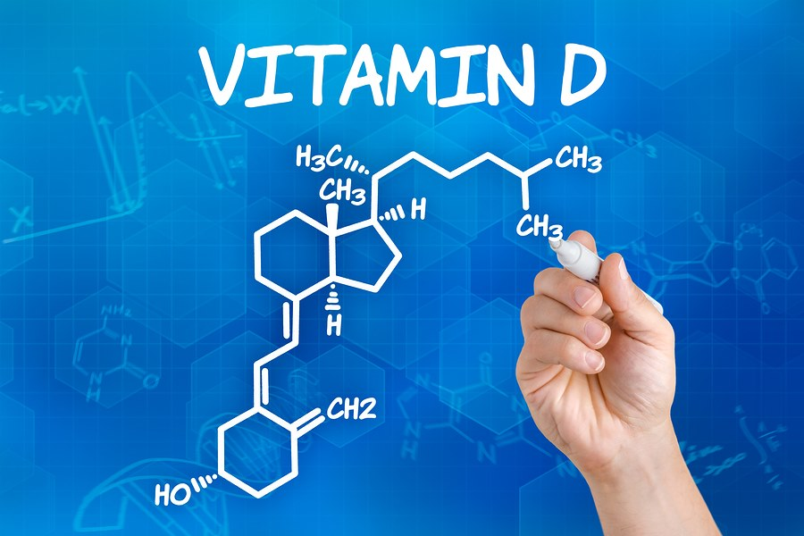
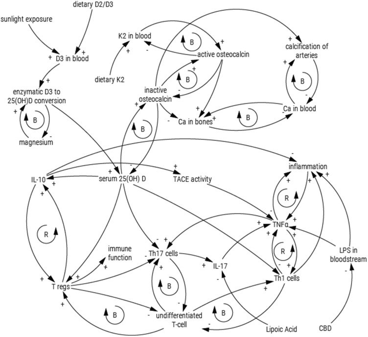

D Vitamini: Ne için? Kim için? Neden?
Kısa cevap:
- Ne için?: Başta bağışıklık olmak üzere pek çok sistemin optimum çalışması için
- Kim için?: Herkes için
- Neden?: Doğal yollarla yeterince alamadığımız için
D vitamini nedir?
D vitamini yağda çözünen vitaminler ailesinden sayılan bir moleküldür. Vitamin olarak adlandırılmakla beraber çalışma şekli ve etkisi açısından aslında bir steroid hormondur.
Gıdalarla beraber alımı oldukça sınırlıdır. Vücutta doğal yoldan yer alması, cilt tarafından kolesterolden (dehidrokolesterolden (7-DHC)) sentezlenmesi ile olur. Bu sentez güneşten gelen UV-B ışığın ve ısının etkisiyle meydana gelir.
Ciltte oluşan, hayvansal gıdalarla alınan veya takviye olarak dışarıdan alınan D Vitamini (Kalsiferol) mevcut hali ile aktif değildir.
Vitamin D karaciğerde kalsidiole (25(OH)vitD) dönüşür. Bu formu kanda ölçtüğümüz D vitaminidir (yarı ömrü 15-21 gün). Daha sonra böbrekte ve bazı bağışıklık hücrelerinde en aktif form olan kalsitriole (1,25(OH)2vitD) dönüşür. Kalsitriol vücutta etkisini gösterdikten sonra saatler içinde pasif formlara dönüşür. Bu nedenle de ölçülmesi hem zor hem de anlamsızdır.
Karaciğer veya böbrek rahatsızlığı olanlarda bu dönüşüm sağlıklı ve yeterince gerçekleşmeyebilir.
D vitamini ne işe yarar?
D vitamininin etkisi iki ayrı başlık altında incelenebilir.
Nongenomik etki:
D vitamini kalsiyum metabolizması üzerinde önemli bir rol oynar. Bağırsaktan kalsiyum ve fosforun emilimini arttırır. Böbreklerin kalsiyum ve fosfor atmasını azaltır. Bu sayede kandaki kalsiyum ve fosfor yükselir. Kalsiyum ve fosforun düzenlenmesindeki rolünü parathormon ve kalsitonin ile paylaşır.
Kanda olması gerekenden fazla D vitamini olması kan kalsiyum seviyesini istenilenden fazla yükseltir. Yükselen kalsiyum vücuttaki yumuşak dokulara çökerek kalsifikasyon plaklarına yol açar. Bu plaklar organlara zarar verir. Bu etkinin olmaması için D vitamini ideal aralıkta tutulmalıdır. K2 vitamini artan kalsiyumun yumuşak dokulara çökmesini engeller ve kalsiyumu kemiklerde toplar. Bu nedenle bazı D vitamini preparatları K2 vitamini de içermektedir.
Genomik etki:
D vitamini bu etkisini hücrede kendisine ait reseptörlere bağlanarak gösterir. Başta bağışıklık sistemi, kalp damar sistemi ve beyin olmak üzere pek çok organda bu reseptörlerden vardır. Bu konudaki çalışmalar daha yeni olmakla birlikte, D vitamini eksikliğinde pek çok sistemin etkilendiği bilinmektedir. Bu etki henüz yeterince aydınlatılamamıştır.
- Bağışıklık Sistemi
Bağışıklık sistemi üzerinde immünomodülatör etkisi vardır. Bu etkinin anlamı D vitamininin bağışıklığı dengede tutmasıdır. Eksikliğinde bir yandan enfeksiyonlara yatkınlık gibi düşük bağışıklık bulguları meydana gelirken, bir yandan da otoimmün (vücudun kendi kendine saldırdığı) hastalıklar gibi aşırı uyarılmış bağışıklık tepkileri meydana gelebilir.
D vitamini makrofajların (bir savunma hücresi türü) fagositoz yapabilmesini (düşmanı yutabilmesini) sağlar
D vitamini kullanmanın özellikle üst solunum yollarında bağışıklık üzerinde oldukça olumlu bir etkisi vardır. Bu etki günlük veya haftalık dozlarda kendini gösterirken daha uzun aralıklı yükleme dozlarında aynı etki görülmez.
Eksikliği alerjik durumların artışını tetikleyebilir. Alerjiler de özünde yanlış uyarılmış bağışıklık tepkileridir. D vitamini kan seviyesinin optimum aralığa çekilmesi alerjileri rahatlatabilir.
- Diyabet
D vitamini enerji metabolizmasının düzenlenmesine de katkı sağlar. Buna bağlı olarak da diyabet gelişme riskini azaltma potansiyeline sahiptir. Bu konudaki çalışmalar henüz yeni ve yetersizdir ancak umut vadeder.
- Beyin ve Sinir Sistemi
D vitamininin beyin hücrelerini serbest oksijen radikallerinden koruduğunu gösteren çalışmalar mevcuttur. Sinapsların (sinir hücrelerinin haberleşmesini sağlayan kısımların) optimum çalışması D vitamini ile ilişkilidir.
D vitamininin Alzheimer hastalığında beyinde biriken artık proteinin temizlenmesinde rol aldığını düşündüren çalışmalar mevcuttur.
- Kalp damar sistemi
D vitamini yokluğunda vücut inflamasyona (yangıya) meyillidir. Bu durum damarların hasar görmesine ve bu hasara bağlı plaklarla kaplanmasına (ateroskleroz) yol açar.
- Kanser
D vitamini hücre bölünmesinin normal formunda devam etmesinde görev alır. Buna bağlı olarak da eksikliğinin kanser sıklığını ve kansere bağlı ölümleri arttırması beklenir.
Bu konuda yapılan çalışmalar özellikle D vitamini alt sınırda olan kişilere D vitamini takviye edilmesinin kansere bağlı ölümleri az da olsa azaltabileceğini göstermiştir.
D vitamini neden eksik?
Güneşe yeterince maruz kalmıyoruz. Maruz kaldığımızda da güneş kremi sürüyoruz.
Magnezyum D vitaminin hem aktifleşmesinde hem de aktif D vitamininin işini yapabilmesinde kilit mineraldir. Magnezyum eksikliğinde D vitamini düzgün çalışmaz. Endüstriyel tarım nedeniyle pek çok mineral gibi magnezyum da hem toprakta hem de yediklerimizde azalmış durumdadır. Bu nedenle de dışarıdan takviye edilmelidir.
D vitamini besinlerle veya takviye olarak alındığında bağırsaklardan emilir. Emilim problemi varsa D vitamini de vücuda alınamaz.
Obezite kendi başına D vitamini eksikliğine yol açabilir.
Bazı ilaçlar D vitaminin aktifleşmesini yavaşlatabilir veya atılımını hızlandırabilir.
D vitamini önce karaciğer sonra böbrek üzerinden aktif formuna dönüştüğü için, bu iki organın hastalıkları D vitaminini olumsuz etkiler.
Kimler D vitamini kullanmalı?
Besinlerle D vitamini alımı oldukça düşüktür. Bu nedenle de ana kaynak ya güneş ışığıdır ya da gıda takviyeleri. Doğal yoldan D vitamini alabilmek için, güneşli mevsimde güneşin tepede olduğu saatlerde yaklaşık 20 dk (cilt hafif pembeleşinceye kadar) güneşlenmek gerekir. Cilt rengi koyu olanlarda bu süre daha da uzundur. Bu sırada güneş kremi kullanmak UVB ışığı keseceğinden D vitamini sentezini bozar. D vitamini sentezinin gerçekleşmesi için gereken diğer faktör ısı olduğundan güneşlendikten sonra cildin hemen soğumaması gerekir. Yani yazın güneş kremiyle güneşlenmek veya güneşlendikten sonra duş almak D vitamini sentezini bozar. Uzun süre kızgın güneşin altında kalmak da cilt kanseri riskini arttırır.
Güneşten D vitamini almak için gerekli şartları sağlayamayan herkes D vitamini takviyesi almalıdır. Ülkemizde güneşin görünmediği 6 ay herkes D vitamini almalıdır.
Kanda yeterince D vitamini varsa cilt D vitamini öncülünü D vitamini yerine cilt kanserini engellediği düşünülen başka iki maddeye (takisterol ve lumisterol) çeviriyor. Bu nedenle yazın güneş alırken bile D vitamini takviyesini almaya devam edebilirsiniz.
D vitamini nasıl kullanılır?
Daha önce hiç D vitamini kullanmadıysanız ve yazları açık havada çalışmıyorsanız D vitamini düzeyiniz düşüktür. Bu nedenle ilk kullanımda kan değerine bakılmadan da D vitamini başlanabilir. Başlandıktan 3 ay sonra kan tahlili ile mevcut D vitamini seviyesini ölçmek ve ona göre D vitamininin dozunu ayarlamak gerekir. İdeal aralık 50-80 ng/mL dir. D vitamini seviyesinin az olması gibi fazla olması da zararlıdır. Fazlası kanda artan kalsiyuma bağlı olarak kalsifikasyon plaklarına yol açar. Bu nedenle D vitaminini doktor kontrolünde kullanmanız gerekmektedir. Sizin için ideal doz doktorunuzla yapacağınız değerlendirmelerle ortaya konacaktır. Örneğin obezlerde ihtiyaç arttığı için verilmesi gereken doz da artar.
D vitaminin kanda kısa zamanda aşırı yükselmemesi ve daha ideal ve istikrarlı bir seviye tutulması için ideal kullanım günlük veya haftalık dozlar şeklindedir.
D vitamini vücutta güneşe bağlı sentezlenir. Bu nedenle de vücut D vitaminini gündüz almaya alışkındır. Vücut saatinin çalışmasının aksamaması için D vitamini takviyesi de gündüz alınmalıdır.
D vitamini yağda çözünür. Yağlı gıdalarla alındığında çok daha iyi emilir.
D vitamininin düzgün çalışması için magnezyum gereklidir. D vitamini ile beraber magnezyum almak faydasını arttırır. K2 vitamini kalsiyumun yumuşak dokuda çökmesini engeller. Kandaki kalsiyumu kemiklere yerleştirir. Özellikle yüksek doz D vitamini kullanılacaksa K2 vitamini de sürece dahil edilmelidir.
Dr. Murat GÖKDUMAN